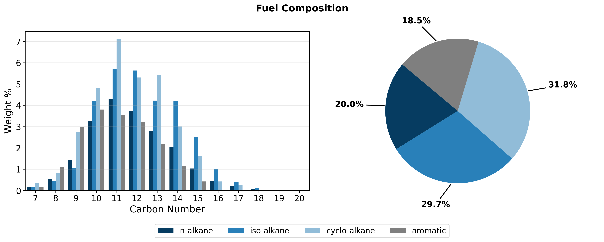
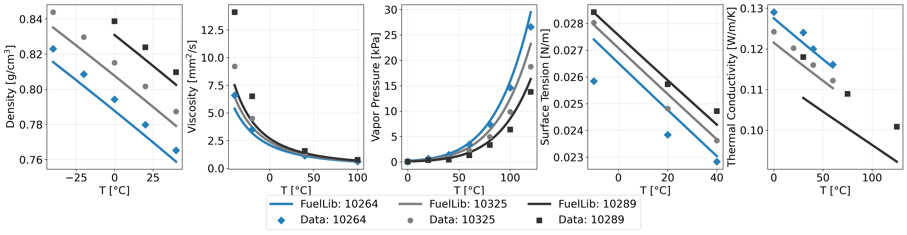

Command-Line Interface (CLI) Tools
FuelLib provides command-line tools for plotting, unit conversion, and exporting fuel data.
For detailed usage of each tool, use the --help or -h flag with the command (e.g., fl-plt-comp --help).
Plotting
The plotting CLI provides quick visualization of fuel composition and properties. The following commands are available:
fl-plt-comp -f FUEL_NAME [OPTIONS] # Plot composition
fl-plt-props -f FUEL_NAME [OPTIONS] # Plot properties vs temperature
If experimental data is available for the fuel and it is properly linked in the fuel_metadata.yaml file, it will be included in the plots for comparison with GCM predictions.
Examples:
fl-plt-comp -f posf10325
fl-plt-props -f posf10264 posf10325 posf10289
fl-plt-props -f my-fuel -dir customFuels/fuelData -p Density Viscosity
The first two commands provide the following plots for the specified fuels, while the third command plots only the density and viscosity of a custom fuel:
{kind=link}

Fig. 5 Compositional information of Jet A (POSF10325).
{kind=link}

Fig. 6 Properties of conventional jet fuels JP-8 (POSF10264), Jet A (POSF10325), and JP-5 (POSF10289) against data from the Air Force Research Laboratory[1]. Note that the data sets for thermal conductivity are very inconsistent, but they typically show linear decreases in thermal conductivity with temperature.
Unit Conversion Tools
Temperature Conversion
fl-C2K 25 # Celsius to Kelvin
fl-K2C 298.15 # Kelvin to Celsius
fl-C2F 25 # Celsius to Fahrenheit
fl-F2C 77 # Fahrenheit to Celsius
fl-F2K 77 # Fahrenheit to Kelvin
fl-K2F 298.15 # Kelvin to Fahrenheit
Lennard-Jones Parameters
Convert Lennard-Jones well depth from J/mol to characteristic temperature in Kelvin (for CHEMKIN chemical mechanisms):
fl-eps2K 1000 # epsilon (J/mol) to characteristic temperature (K)
Fuel Management
Quick listing of available fuels:
fl-fuels # List fuels shipped with FuelLib
fl-fuels -dir customFuels # List custom fuels
Export for CFD
FuelLib provides exporters for generating fuel property files for use in CFD simulations. The following commands are available:
fl-export-pele -f FUEL_NAME [OPTIONS] # PelePhysics
fl-export-converge -f FUEL_NAME [OPTIONS] # CONVERGE
Additional information and examples for using the exporters can be found in the Exporting Properties for Pele and Exporting Properties for CONVERGE tutorials.
Developer Tools
Tools for development and documentation maintenance:
fl-build-docs # Build Sphinx documentation
fl-clean-docs # Clean generated documentation
fl-format # Format Python code with black